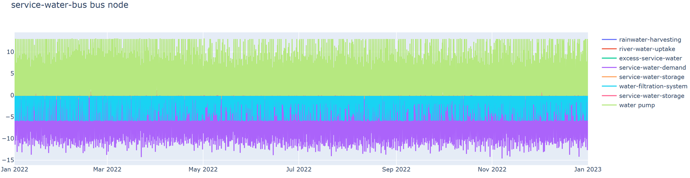
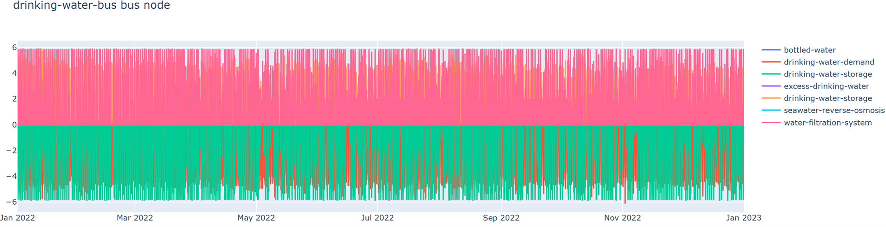
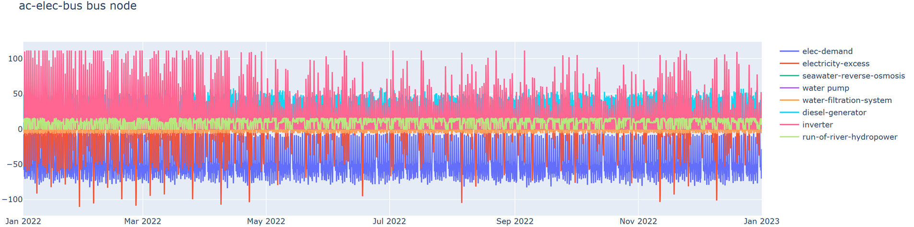
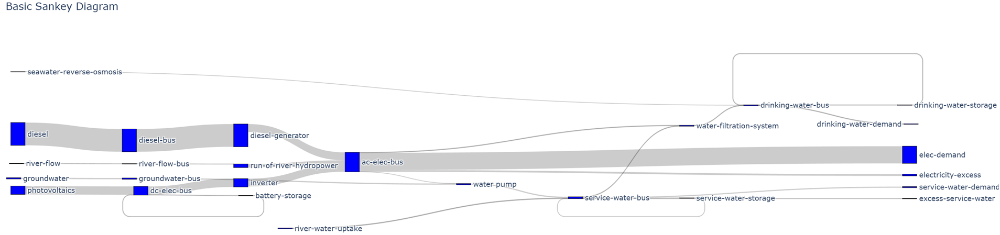

<main>
    <div>
        <p>
            In the final step, the results of the design and optimization of the integrated WEFE system are presented.
            Scalar results on capacities and KPIs are presented in Tables, as well as interactive dynamic graphs
            and Sankey diagrams visualizing the water and energy flows within the integrated WEFE system.
            Finally, a report containing the project description, user input, site-specific data,
            demand profiles, integrated WEFE system layout, and optimization results will be made available
            as pdf download.
        </p>
        <p>
            
            
            
            
        </p>

    </div>
</main>
